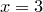

In the simple example of the previous section, we plotted the first column of a datafile against the second. It is possible to plot any arbitrary column of a datafile against any other; the syntax for doing this is:
plot 'data.dat' using 3:5
This example would plot the contents of the fifth column of the file data.dat on the vertical axis, against the contents of the third column on the horizontal axis. As mentioned above, columns in datafiles can be separated using whitespace and/or commas. Algebraic expressions may also be used in place of column numbers, as in the example:
plot 'data.dat' using (3+$1+$2):(2+$3)
In such expressions, column numbers are prefixed by dollar signs to distinguish them from numerical constants. The example above would plot the sum of the values in the first two columns of the datafile, plus three, on the horizontal axis, against two plus the value in the third column on the vertical axis. The column numbers in such expressions can also be replaced by algebraic expressions, and so $2 can also be written as $(2) or $(1+1). In the following example, the datapoints are all placed on the vertical line  – the brackets around the 3 distinguish it as a numerical constant rather than a column number – meanwhile their vertical positions are drawn from the value of some column  in the datafile, where the value of is itself read from the second column of the datafile:
in the datafile, where the value of is itself read from the second column of the datafile:
plot 'data.dat' using (3):$($2)
It is also possible to plot data from only selected lines within a datafile. When PyXPlot reads a datafile, it looks for any blank lines in the file. It divides the datafile up into data blocks, each being separated from the next by a single blank line. The first data block is numbered 0, the next 1, and so on.
When two or more blank lines are found together, the datafile is divided up into index blocks. The first index block is numbered 0, the next 1, and so on. Each index block may be made up of a series of data blocks. To clarify this, a labelled example datafile is shown in Figure 3.1.
0.0 0.0 |
Start of index 0, data block 0. |
1.0 1.0 |
|
2.0 2.0 |
|
3.0 3.0 |
|
A single blank line marks the start of a new data block. |
|
0.0 5.0 |
Start of index 0, data block 1. |
1.0 4.0 |
|
2.0 2.0 |
|
A double blank line marks the start of a new index. |
|
... |
|
0.0 1.0 |
Start of index 1, data block 0. |
1.0 1.0 |
|
A single blank line marks the start of a new data block. |
|
0.0 5.0 |
Start of index 1, data block 1. |
etc |
By default, when a datafile is plotted, all data blocks in all index blocks are plotted. To plot only the data from one index block, the following syntax may be used:
plot 'data.dat' index 1
To achieve the default behaviour of plotting all index blocks, the index modifier should be followed by a negative number.
It is also possible to specify which lines and/or data blocks to plot from within each index. To do so, the every modifier is used, which takes up to six values, separated by colons:
plot 'data.dat' every a:b:c:d:e:f
The values have the following meanings:
|
Plot data only from every |
|
Plot only data from every |
|
Plot only from line |
|
Plot only data from block |
|
Plot only up to the |
|
Plot only up to the th block within each index block. |
Any or all of these values can be omitted, and so the following would both be valid statements:
plot 'data.dat' index 1 every 2:3 plot 'data.dat' index 1 every ::3
The first would plot only every other datapoint from every third data block; the second from the third line onwards within each data block.
Comment lines may be included in datafiles by prefixing them with a hash character. Such lines are completely ignored by PyXPlot and do not count towards the one or two blank lines required to separate blocks and index blocks. It is usually good practice to include comment lines at the top of datafiles to indicate their date and source. In Section 5.4 we will see that PyXPlot can read metadata from some comment lines which follow particular syntax.


 th line in datafile.
th line in datafile. 
 th block within each index block.
th block within each index block. 


 th line within each block.
th line within each block.